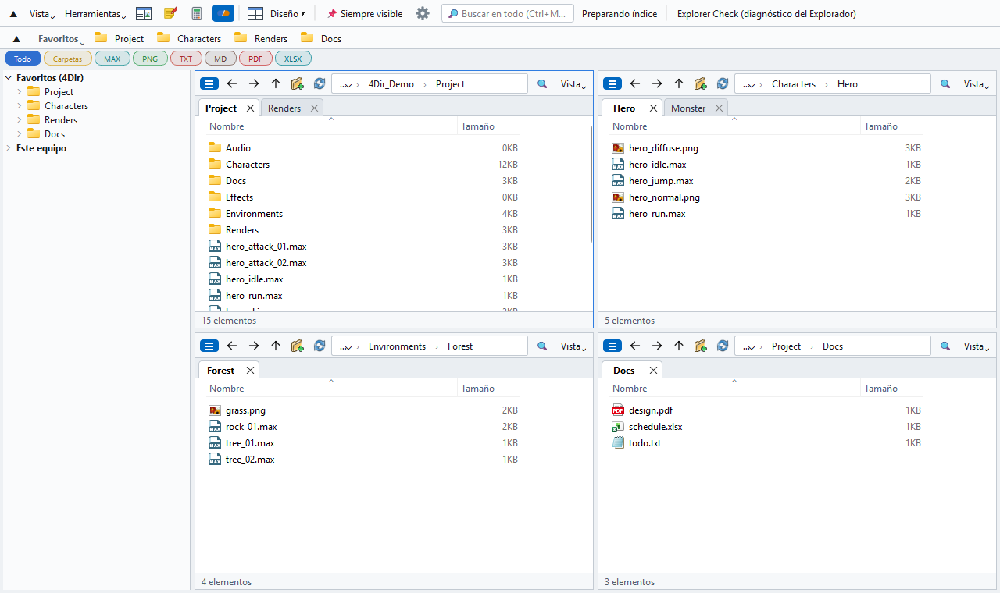
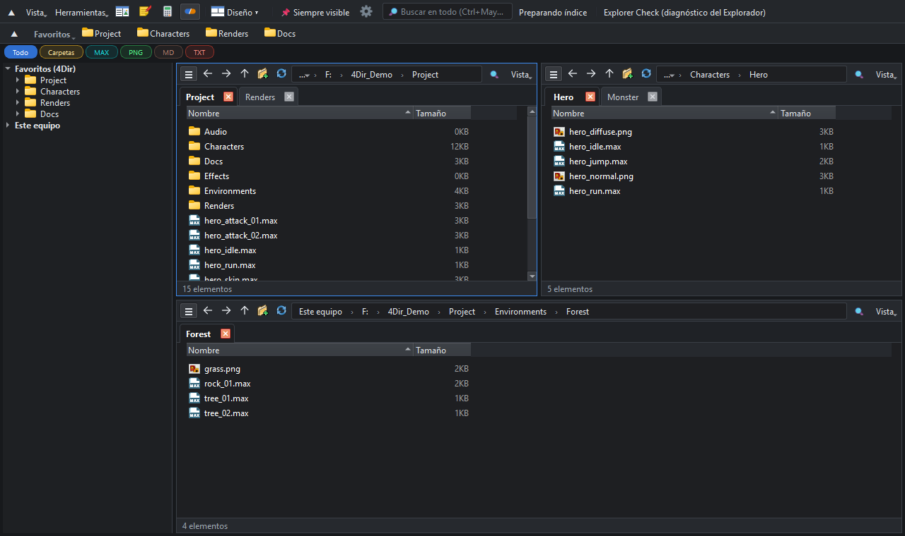

¡¡Un explorador multipanel más rápido que el de Windows!!
Gestor de archivos gratuito para Windows 10/11. Sin instalación: descomprime y ejecuta.
Windows 10/11 64 bits · 47 MB · 2026-11-06 · gratis
Apoya 4Dir
4Dir es gratis y sin anuncios. Si te ahorra tiempo, una pequeña donación ayuda a que sigan llegando actualizaciones.
Novedades de la v0.9.108
- Vista previa de vídeo: los vídeos se reproducen en la ventana de vista previa y avanzan fotograma a fotograma como los GIF (|◀ ▶|, ← →, Espacio para reproducir/pausar), con barra y tira de fotogramas, tiempo actual / total y fps, sonido (botón de silencio) e interruptor de reproducción automática. Los teléfonos (Galaxy, iPhone, cámaras) aparecen en Este equipo: explóralos y copia, arrastra, pega, renombra o borra archivos. Un botón arriba muestra u oculta los botones de tipo en todos los paneles.
- Archivos comprimidos como carpetas: doble clic en ZIP, 7Z, RAR o TAR para verlos dentro de 4Dir (solo lectura); abrir, copiar, arrastrar o F6 para sacar archivos. Cola de copia: copias y movimientos uno a uno; el botón ⏳ muestra los que esperan para cancelarlos o pausarlos. Vista plana: todos los archivos de una carpeta en una lista (clic derecho en vacío o Herramientas). Buscar duplicados: mismo contenido aunque cambie el nombre; conserva uno por grupo y envía el resto a la papelera. Espacio abre y cierra la vista previa.
- Ventana de vista previa: ahora se abre en su propia ventana, como la de notas, así que los paneles no cambian de tamaño; recuerda su posición y tamaño y puede quedar siempre encima (clic derecho). Fotogramas GIF: |◀ anterior, ▶ reproducir / ⏸ pausa, ■ detener, ▶| siguiente, y la tira de fotogramas se arrastra. Los botones de tipo sobre la lista son más pequeños, tienen color por tipo y nunca se cortan: los que no caben van a +N ▾. Las imágenes de las notas mantienen el tamaño que elijas: haz clic y arrastra el tirador de la esquina.
- Ventana de notas: el botón 📝 (o Alt+M, o Herramientas ▸ Ventana de notas) abre las notas en su propia ventana, sin cambiar el tamaño de los paneles; aparece en la barra de tareas y puede quedar siempre visible. Notas de colores con casillas (escriba '[] ' al inicio), viñetas ('- '), negrita, cursiva, subrayado, tachado, color y tamaño del texto, y progreso 3/5. Arrastre el encabezado para reordenar, doble clic para contraer, fije notas arriba y filtre por texto o color. Ctrl+clic abre direcciones web y rutas de carpetas/archivos; arrastre archivos o carpetas para crear enlaces; pegue imágenes. Una nota adjunta a una carpeta avisa al abrirla; con un recordatorio la ventana de notas aparece a esa hora. Las notas eliminadas van a una papelera recuperable. Todas las ventanas comparten las notas y se guardan solas. También tablas, listas numeradas ('1. '), alineación, espaciado, fuentes, un cuadro − tamaño + y un botón para insertar imágenes; los enlaces se ven en azul.
- Imágenes y tipos: una fila de botones de tipo sobre la lista ([Todo] [Carpetas] [JPG] [PSD]…) muestra solo ese tipo (Ctrl+clic para varios). Agrupar por tipo (carpetas · JPG · PNG…) en vista Detalles. En vistas de iconos, las miniaturas llevan etiqueta de tipo (PSD · PNG · GIF…) y las carpetas muestran su primera imagen como portada. El panel de vista previa añade controles de fotogramas GIF (anterior/siguiente, deslizador y tira, número e intervalo, guardar el fotograma como PNG) y muestra la vista previa de Windows de documentos y vídeos cuando existe.
- Información emergente: todos los botones y menús muestran una breve explicación al pasar el ratón. Se desactiva en Configuración ▸ General.

Funciones
Hasta 20 paneles
Diseños de 1, 2, 3, 4 o 6 paneles con un clic, o cualquier cuadrícula de hasta 5 × 4. Cada panel tiene sus propias pestañas.
No te estorba
Lee las carpetas directamente, sin la pesada vista del shell de Windows. Sin temporizadores ni sondeos en reposo: puedes dejarlo abierto junto a 3ds Max, juegos u otras apps pesadas.
Búsqueda instantánea
Escribe y busca entre todos los nombres de archivo de tus unidades. Su propio índice se actualiza en tiempo real, sin permisos de administrador.
Estado SVN de un vistazo
Insignias de modificado / añadido / conflicto leídas directamente de .svn; las carpetas se vuelven rojas si algo cambió dentro. Git y Perforce mediante las superposiciones de Windows.
Se siente como el Explorador
Mismos atajos de teclado, el menú contextual completo de Windows y arrastrar y soltar con el Explorador y otras apps. Clic derecho en una imagen .webp para guardarla como PNG o JPG.
Portable y privado
La configuración se queda en la carpeta de 4Dir. Tema claro/oscuro, 10 idiomas, renombrado masivo, restauración de sesión y diagnóstico del Explorador incluidos.

Cómo instalar
- Descarga el zip con el botón de arriba (o desde Releases en GitHub). El botón verde “Code → Download ZIP” de GitHub solo contiene el código fuente y no se ejecuta.
- Clic derecho en el zip → Propiedades → marca Desbloquear → Aceptar. (Si no, Windows mostrará una advertencia de seguridad cada vez.)
- Descomprímelo donde quieras y haz doble clic en 4Dir.exe. (o 4Dir.vbs si 4Dir.exe está bloqueado)
Si aparece Windows SmartScreen: haz clic en Más información → Ejecutar de todas formas.
Verificar la descarga (opcional)
En el Símbolo del sistema ejecuta certutil -hashfile 4Dir_v0.9.108.zip SHA256; el resultado debe coincidir con:
e5fe1394569211793f93f935860c93bbd52ddf631d4b168d8fb48f3439c0c8eb
Preguntas frecuentes
¿De verdad es gratis?
Sí. 4Dir es gratuito y de código abierto (GPL-3.0). Sin anuncios, sin cuenta, sin periodo de prueba.
¿Puedo usarlo en el trabajo?
Sí. 4Dir es software libre GPL-3.0, así que las empresas también pueden usarlo gratis, sin licencias ni registro. Como funciona sin instalarse, solo comprueba que tu empresa permita programas portátiles.
¿De verdad es más rápido que el Explorador?
Abrir una carpeta con 1.000 archivos en una ventana nueva tardó 0,4 s en 4Dir y unos 2 s en el Explorador. Abrir una ventana más sumó unos 10 MB de memoria en 4Dir y unos 130 MB en el Explorador. Medido 5 veces en el mismo PC (Windows 11, SSD). Con decenas de miles de archivos en una carpeta la diferencia se reduce.
¿Envía datos?
Ningún dato personal. Solo comprueba una vez al día si hay una versión nueva (se puede desactivar en Herramientas).
¿Algo salió mal?
Herramientas → Guardar registro para informe de problemas y pulsa «Enviar por correo» (o envía el zip a support@4dir.net). En GitHub también puedes abrir un issue.